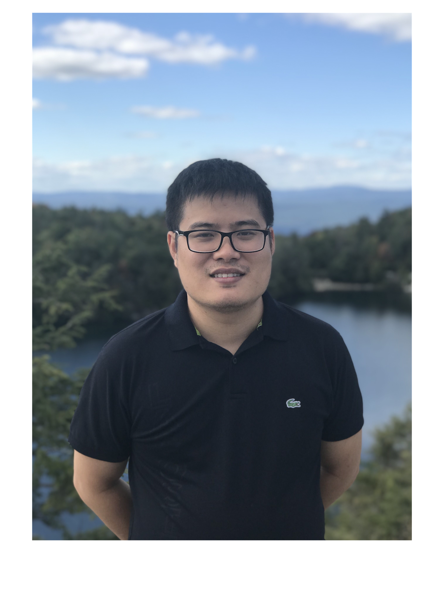

Thien Huu Nguyen
Associate Professor - Department of Computer Science - University of Oregon
- Email: thienn AT uoregon dot edu
- Google scholar:
- Address: 330, Deschutes Hall
University of Oregon
1477 E. 13th Avenue
Eugene, OR 97403, USA
I am an Associate Professor in the Department of Computer Science at the University of Oregon. I obtained my Ph.D. and M.S. degrees in Computer Science from New York University (working with Prof. Ralph Grishman and Prof. Kyunghyun Cho), and my B.S. degree in Computer Science from Hanoi University of Science and Technology. I was also a postdoc in the University of Montréal, working with Prof. Yoshua Bengio and people in the Montreal Institute for Learning Algorithms.
I am an Associate Professor in the Department of Computer Science at the University of Oregon. I obtained my Ph.D. and M.S. degrees in Computer Science from New York University (working with Prof. Ralph Grishman and Prof. Kyunghyun Cho), and my B.S. degree in Computer Science from Hanoi University of Science and Technology. I was also a postdoc in the University of Montréal, working with Prof. Yoshua Bengio and people in the Montreal Institute for Learning Algorithms.
My research lies in Natural Language Processing (NLP) and Machine Learning, with a focus on Large Language Models (LLMs) and generative AI.
The overarching goal is to build AI systems that are capable, efficient, trustworthy, and accessible to speakers of all languages, and that help people solve complex problems across domains.
Current research directions include multilingual LLMs, efficient LLMs, agentic and multimodal AI, trustworthy AI, and AI for science.
This work builds on our long-standing foundation in Information Extraction (IE), where our lab was among the first to develop deep learning models.
Software & Resources
- Orthrus (Spotlight at NeurIPS 2026): memory-efficient parallel token generation via dual-view diffusion. Orthrus unifies the exact generation fidelity of autoregressive LLMs with the high-speed parallel token generation of diffusion models, achieving strictly lossless generation with average speedups of 4.25×–5.36× on Qwen3 models.
- CulturaX: a substantial multilingual dataset with 6.3 trillion tokens in 167 languages, readily usable for large language model (LLM) development. CulturaX is one of the largest multilingual datasets that are rigorously cleaned, deduplicated, and publicly available for natural language processing, and it is fully released on HuggingFace.
- Okapi: a framework for evaluating multilingual LLMs in 26 diverse languages. Okapi has been incorporated into the widely used EleutherAI Language Model Evaluation Harness.
- FourIE: For a better idea about our research on information extraction, check out a demo for our recent neural information extraction system (performing joint entity mention detection, relation extraction, event detection, and argument role prediction) here.
- Trankit: a light-weight transformer-based toolkit for multilingual NLP that can process raw text and support fundamental NLP tasks for 56 languages. Trankit is based on recent advances on multilingual pre-trained language models, providing state-of-the-art performance for Sentence Segmentation, Tokenization, Multi-word Token Expansion, POS Tagging, Morphological Feature Tagging, Dependency Parsing, and Named Entity Recognition over 90 Universal Dependencies treebanks. Trankit can be installed and used easily with Python. Check out Trankit's documentation page for installation and usage. We also provide a demo and release the code for Trankit at our github repo.
I am fortunate to work with the following students:
| Current Students | Alumni |
|---|---|
|
|
|
and many other student collaborators.
- CIS 313 - Intermediate Data Structures (W19, W20, W21, W22, W23, W24, W25, F25, W27)
- CIS 607 - Seminar on Deep Learning for Natural Language Processing (W19, W20, S21, S22, S23, W24, W25, S27)
- CIS 472/572 - Machine Learning (S19, S20, S21, S22, S23, S24, S25, W27)
- CIS 410/510 - Natural Language Processing (F19, W21, S24, S25, S27)
2023
NSF CAREER Award
2022
AI 2000 Most Influential Scholar Honorable Mention in Natural Language Processing by AMiner
EACL 2021
Best Demo Paper Award
EACL 2021
Outstanding Demo Paper Award
2016
IBM Ph.D. Fellowship
2016 - 2017
Dean's Dissertation Fellowship, Graduate School of Arts and Science, NYU
2016
Harold Grad Prize, Courant Institute of Mathematical Science, NYU
2012 - 2017
Henry MacCracken Fellowship, New York University
2012
Second Prize in Student Scientific Research Conference, by Ministry of Education and Training, Vietnam